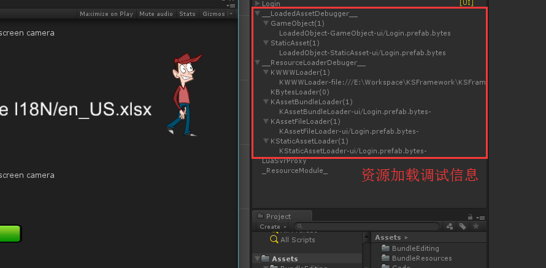
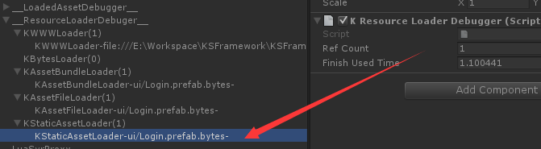

资源的调试监控
在Unity Editor模式下，所有的XXXLoader加载类实例，都会伴随住一个GameObject的产生，而这个GameObject，只用于进行调试、内存信息查看：

资源加载调试信息：Loader、加载的对象

如上图所示，通过KEngine的资源调试器，可以方便的找到加载的AssetBundle的资源对象、监控内存占用的大小、Loader加载消耗的时间、Loader当前引用计数等信息。
对比Unity原生的Profiler，这些信息是即时的。 开发人员可以非常方便的寻找资源泄露问题，优化内存占用。
开发团队可以利用这是调试信息，来精确的判断加载Asset Bundle的过程中，哪些Loader没有被手动释放，哪些Loader、资源被滥用，这些数据都是即时生成的。当然了，这些有一个前提，就是开发人员务必要使用KEngine的Asset Bundle加载接口。